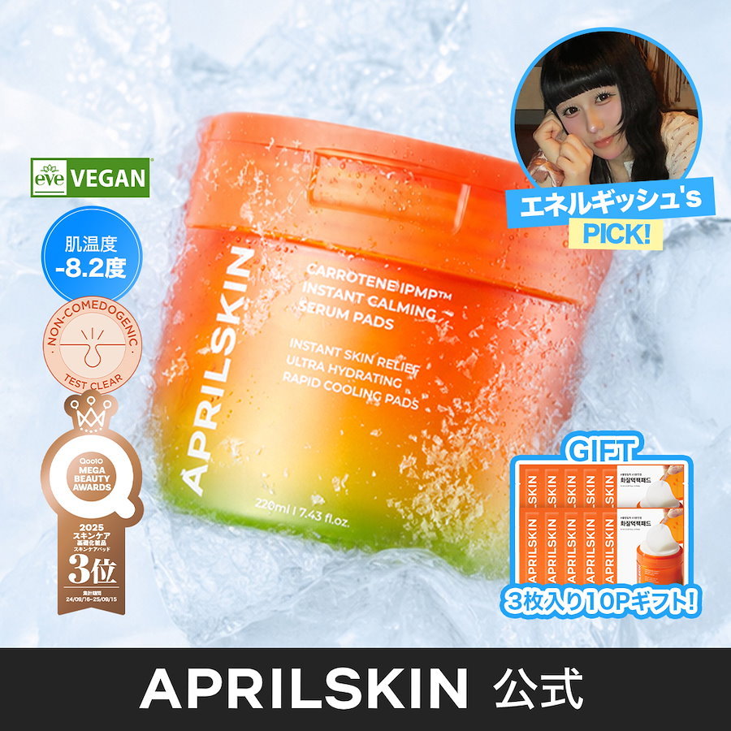

일본 큐텐 「トナーパッド(토너패드)」 카테고리에서 후기가 가장 많은 축에 드는 제품 하나를 골라, 우리가 정한 방식대로 데이터를 모으고 읽고 지도에 올려봤습니다. 7곳에서 2만 건 넘게 모았고, 이 제품이 일본에서 어떤 제품으로 쓰이고 있는지 한 문장으로 정리했습니다.

이 제품이 어떤 제품인지 한마디로 하면 이렇습니다.
이번에 돌려본 건 2~5단계입니다. 1단계(토너패드 리스트업)는 제품 100개를 다 모아야 할 수 있는 일이고, 그다음 빈칸을 고르는 것도 카테고리가 다 채워져야 가능합니다.
1단계에서 「검색 상위」를 그대로 쓰면 안 됩니다. 큐텐 검색 결과는 맨 위 16칸이 통째로 광고(プラス展示)이고 화면에 「PR」 표시가 없습니다. 그 아래 자연 순위에도 하루 100엔짜리 광고(パワーランクアップ)로 끼어드는 자리가 1·5·6·9번에 고정돼 있습니다. 실제로 자연 순위 1위가 후기 1건짜리 제품인 날도 있습니다. 판매량 정렬은 아예 없습니다. 그래서 리스트업은 광고를 걷어낸 뒤 후기 수 기준으로 뽑아야 하고, 「선택형 7종」 같은 묶음 리스팅은 제품 단위로 갈라야 합니다.
AI가 판단은 하되, 근거 없는 판단은 아예 나올 수 없게 만들었습니다. 제품을 어느 칸에 넣든 반드시 후기 원문을 같이 붙여야 하고, 그 문장이 실제로 있는지 코드가 대조합니다. 지어낸 근거는 지도에 못 올라갑니다.
| 출처 | 모은 양 | 이 출처에서 얻는 것 |
|---|---|---|
| 큐텐 후기 | 19,809건 2022년 8월~2026년 8월 전부 | 양이 많고 실제 구매자만 쓴다. 시간 흐름을 볼 수 있는 유일한 곳. 단 후기 1건에 5포인트, 사진 첨부에 +5포인트가 걸려 있어 5점이 88.2%, 중앙 24자다. 평점은 못 쓰고 용도만 쓴다. |
| 앳코스메 후기 | 102건 전부 | 길게 쓴다(평균 360자). 언제 어떻게 쓰는지가 여기 다 있다 |
| 앳코스메 Q&A | 질문 15개 답변 41~108개씩 | 아직 안 산 사람이 뭘 찾는지 직접 물어보는 글. 수요를 보기엔 제일 깨끗하다 |
| LIPS | 312건 | 피부 일기에 가깝다. 계절이나 그날 컨디션 이야기가 나오는 유일한 곳 |
| 인스타그램 | 게시물 465건 댓글 1,160건 | 본문 = 상황 표현과 문구 아이디어. 댓글 = 「어디서 사요?」 같은 유통 신호 |
| X | 24개월 338건 제품명 질의 + 카테고리 질의 | 참고용. 24개월을 훑어도 이 제품 이야기가 39건뿐이고, 카테고리로 넓히면 마우스패드·브레이크패드가 섞인다 |
| 메타 광고 | 일본 브랜드 67 · 카테고리 93 미국 440(비교용) | 경쟁사가 돈을 써서 검증한 메시지. 오래 도는 광고 = 먹히는 메시지 |
모은 원본은 전부 로컬에 보관합니다(파일 17개). 이 리포트에는 필요한 짧은 인용만 넣었고 데이터 자체는 공개하지 않습니다.
| 들어가는 칸 | 근거가 된 후기 |
|---|---|
| 수분·건조 × 화장 전강함 | 「朝のメイク前に使うと、肌の温度を下げて化粧ノリ＆持ちがぜんぜん違うの」 아침에 화장하기 전에 쓰면 피부 온도가 내려가서 화장 먹는 것도 지속력도 완전히 달라져요 「朝の時間の無い中で5分で化粧ノリ抜群です」 바쁜 아침에 5분만 써도 화장이 아주 잘 먹어요 외 다수 |
| 붉은기·진정 × 계절·컨디션 여름 열감 · 목욕 후강함 | 「太陽やお風呂上がりの火照ったお肌にペタッと5分の時短ケア」 햇볕 쬐거나 목욕하고 나서 화끈거리는 피부에 5분만 딱 붙이면 끝 「冷蔵庫で冷やしたのをお風呂上がりにつけるのがオススメ」 냉장고에 넣어뒀다가 목욕 후에 붙이는 걸 추천해요 |
| 붉은기·진정 × 밤 세안 후보통 | 「夜寝る前に使うと翌朝の肌がプルプル」 자기 전에 쓰면 다음 날 아침 피부가 탱탱해요 (실구매자) |
| 급할 때 · 밖에서해당 없음 | 근거 0건. 들고 다니거나 덧바르는 이야기가 전혀 없습니다 |
브랜드가 내세우는 것 중 후기로 확인되는 건 시원함, 진정, 화장 잘 먹음, 보습입니다. 반대로 黒ずみケア(칙칙함·블랙헤드 케어)와 皮脂コントロール(피지 조절)은 확인이 안 됩니다. 브랜드는 말하는데 실제로 그렇게 느꼈다고 쓴 사람이 없습니다. 광고에서도 피부 고민 이야기(모공 1건, 시원함 3건)가 거의 안 나오는 걸 보면 같은 이야기입니다.
큐텐 후기에는 구매자가 직접 고른 피부 고민이 붙어 있습니다. 19,809건 중 12,828건(65%)에 기재돼 있습니다.
| 피부 고민 (복수 선택) | 비율 | |
|---|---|---|
| 여드름·피부 트러블 | 79.3% | |
| 모공 | 58.1% | |
| 건조 | 35.1% | |
| 칙칙함·색 얼룩 | 19.6% | |
| 기미 | 11.5% | |
| 주름·처짐 | 7.5% |
피부 타입은 혼합성 44.9% · 건성 26.3% · 지성 17.9% · 민감성 10.9%. 피부 톤은 웜톤 51.4% / 쿨톤 48.6%로 반반입니다.
| 소스 | 표본 | 분포 |
|---|---|---|
| 앳코스메 사이트에 실제 나이가 적혀 있음 | 103 | 중앙 35세 · 평균 37.0세 30대 전반 30.4% · 40대 21.6% · 30대 후반 19.6% · 20대 후반 12.7% |
| LIPS 연령대만 표기 | 184 | 20대 후반이 최다 20대 후반 28.3% · 30대 전반 22.3% · 30대 후반 19.0% · 20대 전반 14.7% |
두 소스가 10살쯤 어긋납니다. 시장이 다른 게 아니라 매체를 쓰는 사람의 나이가 다릅니다. 그래서 하나로 말하지 않고 둘 다 적습니다. 큐텐·인스타그램·X에는 나이 정보가 없고, 일본 광고 라이브러리도 상업 광고의 인구통계는 공개하지 않습니다.
큐텐에서 이 브랜드 제품을 후기 수로 세우면 토너패드가 2위입니다.
| 제품 | 후기 | |
|---|---|---|
| 1 | 히어로 쿠션 2.0 (SPF50+ 쿠션 파운데) | 23,498 |
| 2 | 카로틴 IPMP 세럼팩 패드 (이 제품) | 19,809 |
| 3 | 히어로 립타투 틴트 | 13,676 |
| 4 | 매직스노우 쿠션 | 4,460 |
큐텐 19,809건 · 앳코스메 103건 · LIPS 312건에서 피부 고민과 쓰는 때를 한 문장 안에서 같이 말한 문장만 뽑아 칸에 넣었습니다. 칸의 숫자는 그 문장의 개수이고, 칸을 누르면 나오는 목록과 같은 것을 셉니다.
| 아침 세안 후 | 밤 세안 후 | 화장 전 | 급할 때·밖에서 | 계절·컨디션 | |
|---|---|---|---|---|---|
| 각질·모공 | 24-1 | 9 | 38-1 | 0 | 20 |
| 붉은기·진정 | 56 | 29-1 | 103-1 | 2 | 63 |
| 수분·건조 | 219 | 80 | 546-1 | 9-4 | 143 |
| 톤·결 | 16 | 9 | 27 | 0 | 11 |
칸의 숫자는 그 칸에 실린 후기 문장 수입니다. 칸을 누르면 바로 그 문장들이 원문과 번역으로 펼쳐집니다. 표의 숫자와 아래 목록은 같은 것을 셉니다. 문장마다 어떤 단어 때문에 그 칸으로 갔는지도 함께 보입니다.
색이 진할수록 많이 언급된 칸입니다. 큐텐 19,809건 · 앳코스메 103건 · LIPS 312건에서 피부 고민과 쓰는 때를 한 문장 안에서 같이 말한 문장 1,404개를 뽑았습니다. 오른쪽 위 작은 숫자는 그 칸의 불만 문장 수입니다.
| 상황 | 건수 | |
|---|---|---|
| 냉장고에 넣어두고 씀 | 334 | |
| 여름·더위 | 315 | |
| 목욕 후 화끈거림 | 132 | |
| 겨울·난방 | 96 | |
| 햇볕·자외선 | 22 | |
| 꽃가루 | 13 | |
| 환절기 | 10 | |
| 에어컨 | 4 | |
| 사우나·온천 | 1 |
일본에만 있는 계절 상황(꽃가루 13, 에어컨 4, 사우나 1, 장마 0)은 이 제품 후기에서 아주 얇습니다. 대신 냉장 보관(334)과 여름 더위(315)가 이 칸을 채웁니다. 이 제품이 실제로 차지한 계절 자리는 「여름」이고, 꽃가루나 장마 자리는 아직 비어 있습니다.
빨간 막대가 6~9월입니다. 그달 후기 수 대비 비율로 그렸습니다(후기 수 자체가 메가와리 때 확 늘어나기 때문에 건수로 보면 왜곡됩니다). 겨울에 0.5% 안팎이던 게 여름에 3~5%까지 올라가고, 2025년과 2026년 두 해 모두 똑같은 모양이 나옵니다. 한 해 유행이 아니라 매년 돌아오는 수요라는 뜻입니다.
계절·컨디션 자리는 이 프로젝트의 핵심 가설인데, 어디서 보느냐에 따라 결과가 완전히 달라집니다. 같은 제품, 같은 기간인데도 이렇습니다.
| 출처 | 장마 「梅雨」 | 꽃가루 「花粉」 |
|---|---|---|
| 큐텐 후기 19,809건 (제품) | 0건 | 13건 (11건이 3월) |
| X 24개월 338건 (카테고리+제품) | 피부 얘기는 2건 | 피부 얘기는 3건 |
| 인스타그램 465건 (제품+카테고리) | 2건 | 33건 (28건이 2~4월) |
| LIPS 312건 (카테고리) | 21건 (7%) | 17건 (5%) |
장마는 큐텐 후기 19,809건에서 한 번도 안 나오는데, LIPS에서는 7%가 이야기합니다. 실제로 이런 식으로 씁니다 — 「混合肌(Tゾーンが極脂性肌で梅雨時期前髪はペタペタ･口周り鼻周り極乾燥肌で粉を吹くことも)」 복합성 피부라서 T존은 완전 지성이고 장마철엔 앞머리가 들러붙는데, 입가랑 코 주변은 너무 건조해서 각질이 일어나기도 해요. 장마철에 T존과 볼이 정반대로 무너지는, 아주 구체적인 이야기입니다.
이유는 매체 성격 때문입니다. 큐텐 후기는 배송이랑 가격을 25자로 쓰는 구매 평가, X는 잡담, 인스타그램은 협찬으로 확인된 글이 67%입니다. 계절이나 컨디션 이야기는 「피부 일기」를 쓰는 곳에서만 나옵니다.
꽃가루는 후기 500건, 2,000건, 5,000건까지 계속 0이었습니다. 10,000건을 넘기고 나서야 처음 나왔고, 19,809건 전부를 보니 13건 중 11건이 3월에 몰려 있었습니다(2025년, 2026년 두 해 다). 기획 문서에 적었던 그대로입니다 — 「사우나 같은 말은 후기 100개에서는 0번, 2,000개에서는 10번 나온다」.
참고로 일본 광고 라이브러리는 내려간 광고를 남기지 않습니다(같은 브랜드를 미국에서 보면 440개 중 73개가 종료된 광고로 나옵니다). 일본에서는 실패한 광고를 나중에 확인할 방법이 없으니, 이건 주기적으로 찍어둬야 하고 이번 84개가 첫 기록입니다.
| 출처 | 판단 | 이유 |
|---|---|---|
| 큐텐 후기 | 전부 모은다 | 양·실구매·시간 흐름. 인기 제품 하나가 8분이면 끝난다 |
| 앳코스메 후기 + Q&A | 전부 모은다 | 어떻게 쓰는지, 뭘 찾는지가 여기 있다 |
| LIPS | 꼭 본다 | 계절 자리를 판단하려면 없으면 안 된다 |
| 인스타그램 본문 | 본다 | 상황 표현과 문구 아이디어. 태그당 인기 30건이 최대 |
| 메타 광고 | 주기적으로 찍는다 | 경쟁사 메시지. 일본은 과거가 안 남으니 지금부터 쌓아야 한다 |
| 인스타그램 댓글 | 안 본다 | 1,160건에 상황 언급이 2건. 대신 「일본에서 살 수 있나요」 같은 유통 신호로만 쓴다 |
| X | 참고만 | 제품명으로 24개월을 훑어도 패드 이야기가 39건. 카테고리로 넓히면 절반이 마우스패드·브레이크패드·침대패드다 |
| X 답글 | 안 본다 | 1년 통틀어 72개 |
| 큐텐 Q&A | 안 본다 | 공개가 안 된다(문의가 판매자한테만 간다) |
| 라쿠텐 | 안 본다 | 제일 잘 팔리는 상품 후기가 6건. 같은 제품이 큐텐에선 19,809건 |
아직 안 본 곳: 아마존 재팬, 유튜브, 틱톡.